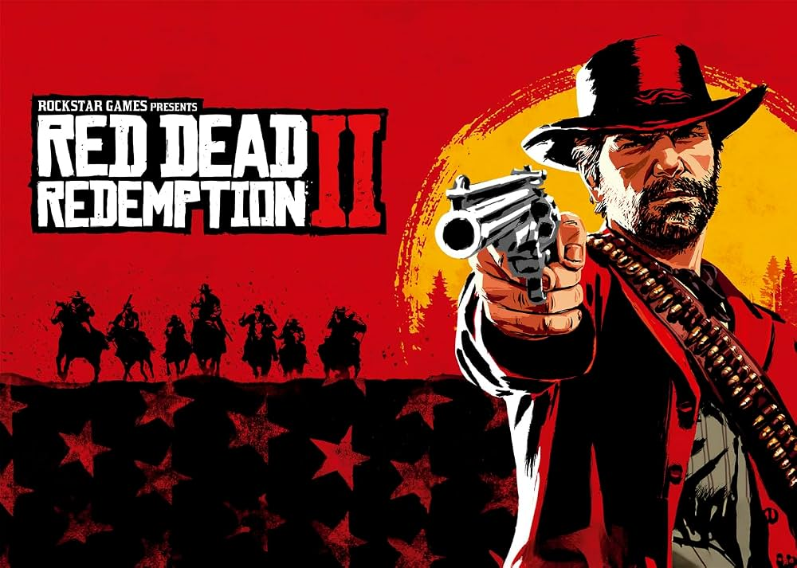
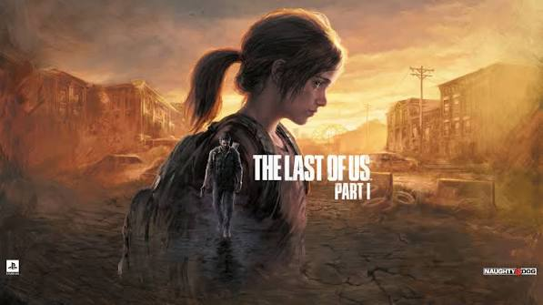
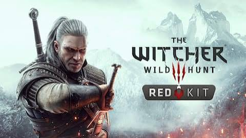

Faroeste
Red Dead Redemption 2
Acompanhe o declínio da guangue Van der Linde e o fim da era dos fora-da-lei na América de 1899.
Ver Linha do Tempo →Explorando a cronologia e o enredo das maiores franquias dos videogames.
Conheça o ProjetoO Game History nasceu com o propósito de mapear a narrativa de jogos complexos e aclamados. Muitas vezes, detalhes cruciais da história se perdem entre sequências e spin-offs. Nossa plataforma organiza esses acontecimentos em linhas do tempo interativas para você acompanhar cada evento em ordem cronológica.

Acompanhe o declínio da guangue Van der Linde e o fim da era dos fora-da-lei na América de 1899.
Ver Linha do Tempo →
Uma jornada visceral sobre sobrevivência, perda, laços afetivos e busca por vingança.
Ver Linha do Tempo →
A saga de Geralt de Rívia pelo Continente em busca de Ciri em meio a guerras e monstros.
Ver Linha do Tempo →Documentar datas, locais e desdobramentos narrativa com fidelidade às obras originais.
Tornar a leitura leve e dinâmica através de navegação visual fluida e responsiva.
Servir como base para a inclusão futura de novas franquias e universos dos games.